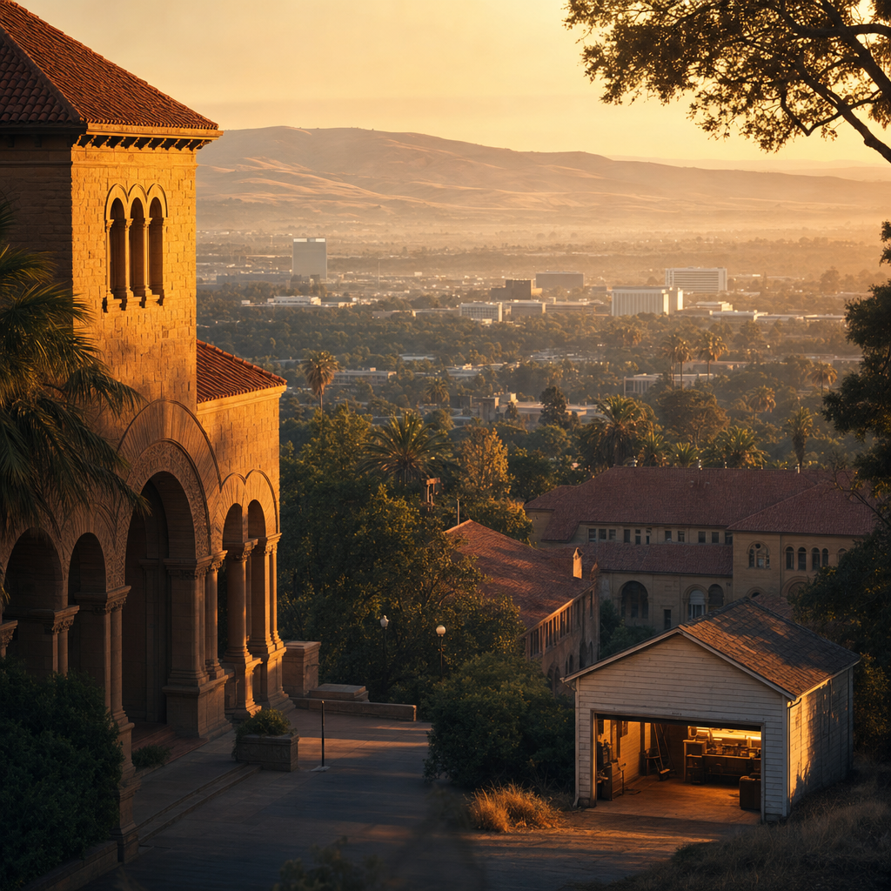
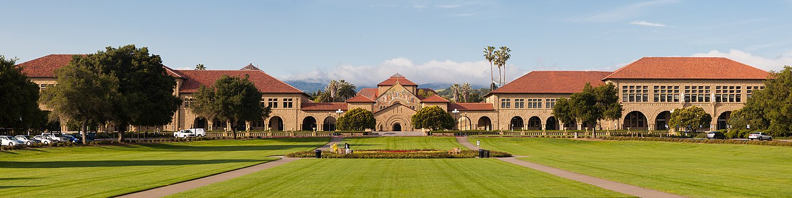

One university, 545 founder links, and a flywheel that ran from a 1939 garage to OpenAI — read honestly, seams and all.
Four names sit at the top of a list of 394: Elon Musk founded 15 companies and organizations, Peter Thiel 10, and Google's Larry Page and Sergey Brin 8 apiece. They have one thing in common — all four were educated at Stanford.
That is not a coincidence; it is a design. The Stanford-to-Silicon-Valley pipeline was engineered by one man, Frederick Terman, the engineering dean who in 1951 built the world's first university-owned industrial park so his graduates would build companies next door instead of leaving California. His first tenants were two of his own students, Bill Hewlett and Dave Packard, whose 1939 garage at 367 Addison Avenue is now a state landmark called "the birthplace of Silicon Valley."
This is the story of that machine, told through 545 links on Wikidata — and told honestly, because the data is as revealing in what it omits as in what it records.
Guess first: who has founded the most companies and organizations on this list? The answer is the spine of the whole pipeline.
Elon Musk leads with 15, Peter Thiel with 10, Page and Brin with 8 each, then Jeff Skoll and Mukesh Ambani at 7, Herbert Hoover and William Hewlett at 6. A few people anchor a wildly disproportionate share of 545 links.
This is the Silicon Valley flywheel made visible. The companies with the most Stanford co-founders are exactly the ones you would name — OpenAI appears four times, Sun Microsystems, PayPal, Palantir and Founders Fund three times each. Success in one venture funds and credentials the next; the "PayPal Mafia" that built LinkedIn, Palantir, SpaceX and YouTube is the loop running at full speed.
String the marquee names along a timeline and the textbook Valley appears, every node a Stanford alumnus: Hewlett-Packard in 1939, then the 1980s workstation wave — Logitech and Silicon Graphics (1981), Sun Microsystems (1982), Intuit (1983), Cisco (1984) — Nvidia and Yahoo in the early nineties, Google and PayPal in 1998, LinkedIn and SpaceX in 2002, Palantir in 2003, and on to Coursera, Robinhood, OpenAI and Neuralink.
The pipeline never cooled. Only 14 of these entities predate 1950; the 2000s produced 120 and the 2010s-20s another 123. Roughly 56% of everything Stanford alumni founded here was created since the year 2000 — the machine sped up as the Valley matured.
For all its global reach, the pipeline is physically tiny. Where a headquarters is recorded, San Francisco is the single most common home (51 companies), trailed by the classic Valley towns — Mountain View (19), Palo Alto (17), Menlo Park (10), Sunnyvale and San Jose (8 each). Two in five geolocated companies sit inside the Bay Area; the rest scatter across New York, Washington and the world.
That clustering is Terman's industrial park still echoing seventy years on: the founders stayed within a short drive of the campus that taught them, and the corridor from Palo Alto to San Francisco became the densest startup ground on Earth.

Now the honesty. It is tempting to read this as a clean census of tech, but only 104 of 545 links are flagged as tech at all. The reason is not that the rest are non-tech — it is that 323 links, 59% of the entire dataset, have no industry recorded on Wikidata whatsoever. Google and SpaceX sit in that unflagged majority. The tech count is a floor, and the true share is unknowable from this field.
Where industries are named, they read like a Valley syllabus — financial services (18), software (13), AI (7), internet and IT (6 each), semiconductors (5) — but they describe barely half the list, because the other half is simply blank.
And "founded" is looser than it sounds. Of Musk's headline 15, three are not companies: America PAC, the America Party, and a school called Astra Nova. Across all 509 entities, roughly 67 are foundations, PACs, schools or funds rather than firms. "Educated at Stanford" is loose too — Musk is counted though he left a Stanford PhD almost immediately. The ranking measures empire-building as much as company-building.
Zoom out and the stakes dwarf any single number. A Stanford study estimated that companies formed by its entrepreneurs generate about $2.7 trillion in annual revenue and 5.4 million jobs — some 39,900 companies that, gathered into one country, would be the world's tenth largest economy, from Tesla and Nike to Netflix and Trader Joe's.
Our 545 links are a tiny, named, traceable slice of that universe — every edge a person, a company and a year you can check on Wikidata. That is the point: not that this is the whole map, but that you can follow every line on it back to its source.
{kind=link}